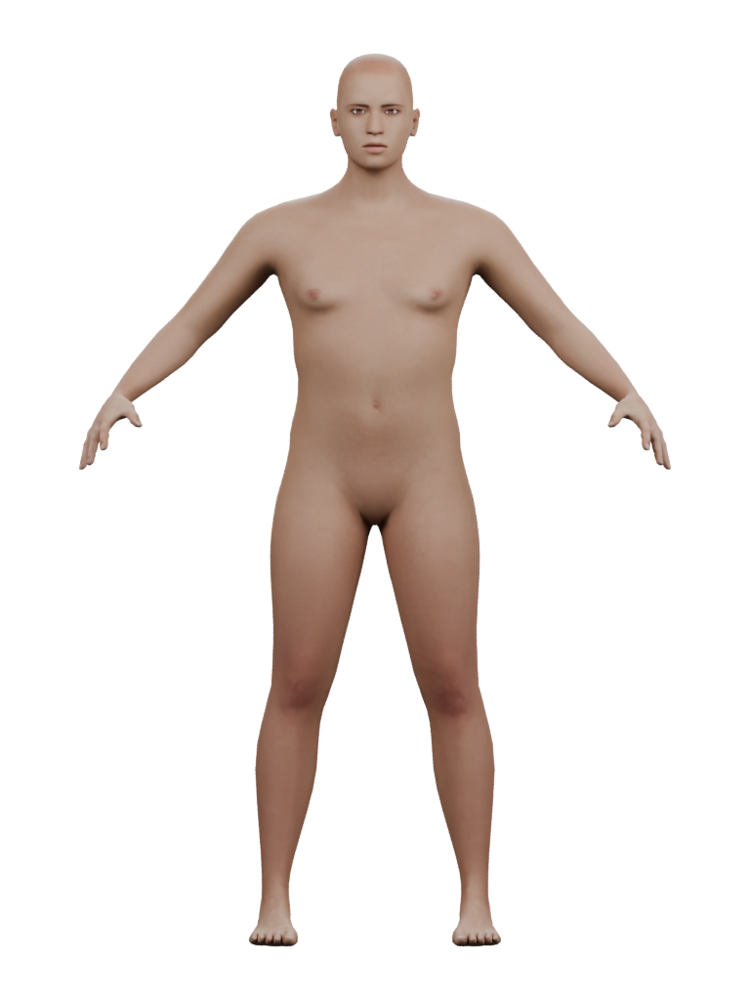

Ari · skin response comparison
One fixed surface-response study at the same warm brown color, geometry and lighting. Compare the forehead, cheeks and shoulders for highlight strength, form and readability. Scalp color, face shape, curls, wardrobe and expressions remain ahead.
Previous color comparison · Evidence and limits
Front
 Previous response · 0.5
Previous response · 0.5 Fixed response study · 0.75
Fixed response study · 0.75Profile
 Previous response · 0.5
Previous response · 0.5 Fixed response study · 0.75
Fixed response study · 0.75Body
 Previous response · 0.5
Previous response · 0.5
Fixed response study · 0.75